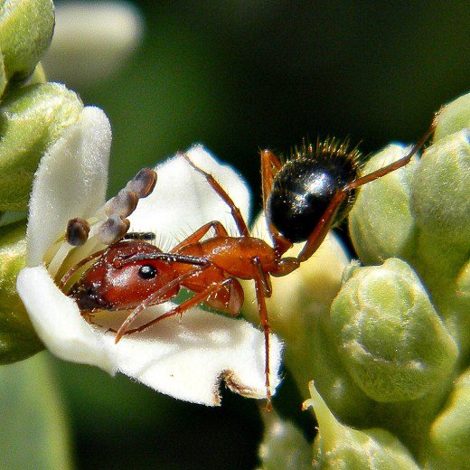
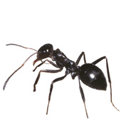
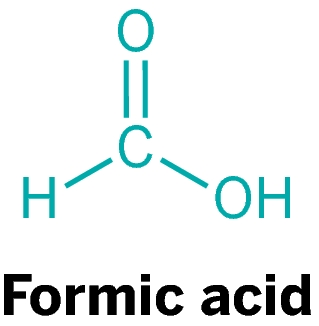

The word formiat comes from the Latin word, a kind of red ant name formica rufa which can secrete acid and form as free acid. It has a systematic name that is Metamoric Acid. Formic acid is naturally present in bee sting and ant, so it is also known as acid ant. Formic acid is an important intermediate compound in many chemical syntheses. Formic acid chemical formulas can be written as HCOOH or CH2O2.

In nature, formic acid produced many insects from the Hymenoptera, for example bees and ants as a tool of attack or defensive devices. Formic acid is also the result of significant combustion of alternative fuels, is burning methanol (and water-mixed ethanol), when mixed with gasoline.

The name of the formic acid comes from the Latin word formica which means "ant". Initially, the compound is isolated by an ant distillation. Ants produce this acid in a sac called acidophore. If the ant "bites" (actually clamped), it is also an acidic acid fungicide from acidophore to strengthen the pain of the victim. Formic acid derived chemical compounds, eg salt groups and esters, are called formats or metanoates. The format ion has a HCOO-chemical formula.
This acid is commonly found in several plant species, in the nettle hairs and the result of bacterial fermentation of carbohydrates. Some scientists conduct research related to the formic acid of the ants. Brunfles at the beginning of the 16th century investigated the steam from mountain ants causing the red color of the plants.
Et-Muller in 1684 has distilled a number of mountain ants to produce an "acid spirit" which can damage the iron. Fisher distilled a number of ants with water and was found in a distillate solution of an acid resembling "spirit of v inegar". Generally, formic acid sold in the market has levels of 85% and 90% while in the form of anhydrous is available in free amounts. Formic acid is widely used for rubber coagulants, conditioners in textile dyeing, leather industry and synthesis of pharmaceutical ingredients and other chemicals.

Formic acid is also prepared in the form of its esters by treatment of carbon monoxide with an alcohol such as methanol (methyl alcohol) in the presence of a catalyst.
Formic acid is not a typical carboxylic acid; it is distinguished by its acid strength, its failure to form an anhydride, and its reactivity as a reducing agent—a property due to the −CHO group, which imparts some of the character of an aldehyde. The methyl and ethyl esters of formic acid are commercially produced. Concentrated sulfuric acid dehydrates formic acid to carbon monoxide.
Pure formic acid is a colourless, fuming liquid with a pungent odour; it irritates the mucous membranes and blisters the skin. It freezes at 8.4 °C (47.1 °F) and boils at 100.7 °C (213.3 °F).